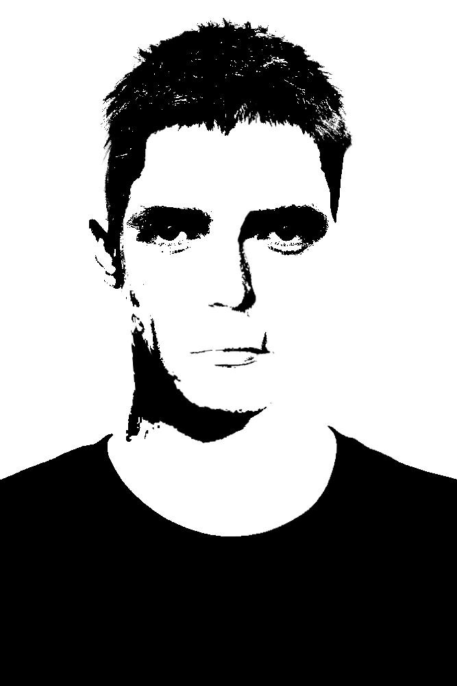

Role: Fighter Pilot / Squadron Commander
— Lean, composed posture; minimal expressive gestures
— Off-duty attire consistent with stereotypical pilot aesthetic
— Movements controlled, economical
— Maintains steady eye contact when listening
Ross presents as calm, measured, and emotionally regulated. He engages with others without hostility, but also without significant warmth.
He also:
— Prioritizes duty over personal interpretation
— Avoids moral framing (no right and wrong as such)
— Functions effectively within structured hierarchy
— Provides advice when prompted, though often generic and non-specific
Demonstrates strong listening behavior. However, this should not be mistaken for openness—he processes, acknowledges, and continues unchanged. He might be gathering information. If there's any rot in their ranks, he'll turn them in.
— Identity strongly tied to role
— Emotional neutrality (potentially constructed)
— Suppressed personal expression
— Underlying rigidity (shaped by paternal influence?)
Observed flaw: Moments of subtle delay or detachment when confronted with emotionally charged or morally complex scenarios—suggesting neutrality may function as avoidance rather than resolution.
Dragonfly. Fighter pilot. The commander of his fighter pilot unit. The unit, I believe, consists of seven people, including him. No specifics.
Off duty, he dresses casually, almost like a stereotypical pilot. He's not exactly accommodating; he's a simple man, but in every matter he tries to maintain a certain... neutrality. Mainly because, as he says, he can never see the whole situation, and there is no right or wrong. He's friendly with Martin and Daniel, and shows interest in the zombie ant and Henry. He's neutral with everyone else.
A good soldier. That seems to be part of his personality—being a good soldier. He's rather aloof, but a good listener. If asked, he'll give advice, but it's all the same old story and not very practical. A reliable man. But a soldier by calling.
He grew up without a mother. Perhaps his indifference and absolute calm in almost any situation is just an act, but if so, it's a good one. It's good, but it's a bit flawed in places. I think it's all a consequence of his father's upbringing. He probably told Ernest, even as a little boy, what a man should be, and what a soldier should be. But he's surprisingly good at following beliefs he doesn't believe at all. Whoever worked on him like that did a commendable job.
